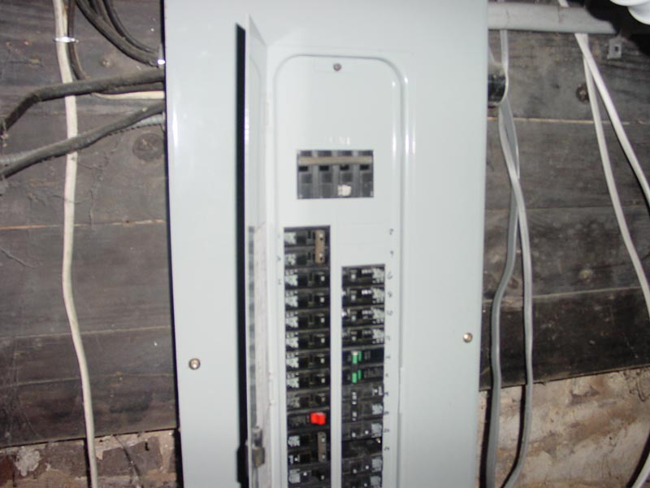

|  |
|
A strong electrical service and new box are purched into this older house. The problem seems to be what happens from there. Three successive layers of wiring appear to be in place. The oldest is hot-and-cold twisted cloth-insulated wiring probably from pre-1950. Most of the built-in fixtures and some rooms reside on this wiring which is all switched to a single 30 amp breaker. The next layer appears to be late-60s cloth-tube and plastic wiring that the predominance of outlets around the house are switched with. This includes the dust-catching flush-floor fire-starting outlets in the living room. The final layering of wiring is a hapahzard update of modern wiring to the main appliances and various outlet services for computers and air-conditioners on isolated breakers. [ Back ] |